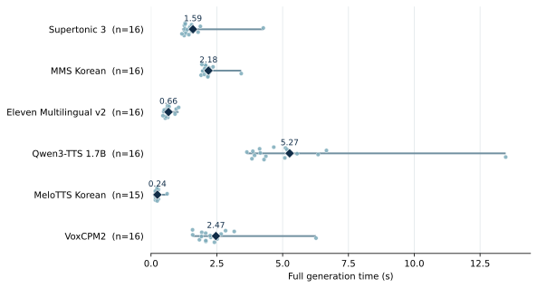
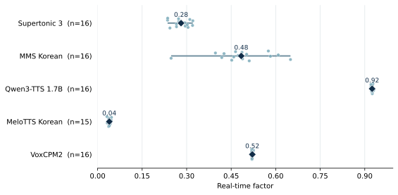
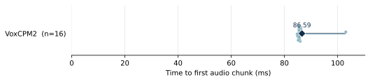

KO-TTS Arena ↗
Product codes, telephone numbers, and delay announcements motivated tests of omission and information order.
The same digits can denote an identifier or a quantity, and Korean reads them differently. We wanted to hear how different TTS systems handle that distinction. We found few resources that paired the models of interest on identical Korean prompts with generation-time measurements. We therefore wrote 16 prompts, synthesized them with six models, and released the recordings and timing data.
We designed each prompt around an audible distinction. In P13 and P16, the order number and quantity stay the same while their written forms change. If a model drops the leading zeros only in P13, the paired recordings isolate a difference associated with notation.
Product codes, telephone numbers, and delay announcements motivated tests of omission and information order.
Work on numeral and English-text normalization informed the digit and spelled-out control pair.
The National Institute of Korean Language’s account of nasal insertion and assimilation in 꽃잎 informed the sound-change prompt.
All prompts were written for this project. Letter names, self-corrections, and question intonation are exploratory items. We did not collect listener ratings or mean opinion scores (MOS).
Each row compares recordings of the same Korean text. Listening notes identify the contrast to attend to. Use the blind option to shuffle and hide model names. English glosses are provided for reference; every model received the Korean original.
ElevenLabs Multilingual v2 used Hoon, a standard Korean narrator, with the language set to Korean. The reason for excluding Typecast SSFM is explained below. Typecast terms
Commercial-use terms for publicly available weights appear in each column.
Players use level-matched MP3s. The WAV files preserve the generated level. Scroll the tables horizontally on narrow screens.
Each dot represents one published clip. Diamonds mark arithmetic means and line endpoints mark the minimum and maximum. The range includes variation in prompt length.



MeloTTS failed on the isolated letter ㄹ in P07, leaving 15 successful clips. The ElevenLabs web interface was used without timing instrumentation. Only VoxCPM2 was instrumented for first-chunk timing. Per-prompt CSV · Plotting code
Supertonic and MMS ran on an Apple M1 CPU after warm-up; we retained the first of three runs per prompt. Qwen3-TTS, VoxCPM2, and MeloTTS each ran once per prompt after warm-up on an RTX PRO 6000 Blackwell GPU. Completion time ends when the full waveform is available and excludes file writing. RTF divides this time by the duration of the resulting clip. Hardware and speaker differences matter when interpreting these measurements.
For Hoon we used speed 1.0, stability 50%, similarity 75%, style 0%, and speaker boost on. The downloaded MP3s were decoded to WAV.
The official Qwen3-TTS and VoxCPM2 weights use Apache 2.0. MeloTTS uses MIT, while the distributor of its Korean BERT dependency requests an MOU for commercial use. The MMS weights are restricted to non-commercial use. BERT distributor’s notice
Costs and terms (Korean) · Audio and measurements
Article 3, item 10(2) of the Typecast API Terms of Use restricts monitoring API performance or functionality for benchmarking or competitive purposes. Because this project compares synthesized speech and generation performance across models, we have deferred Typecast SSFM API synthesis and publication of comparison audio and measurements pending clarification of permission from the provider. Its exclusion does not indicate a lack of Korean support or a quality issue. Typecast API Terms, Article 3 · Checked on 2026-11-06